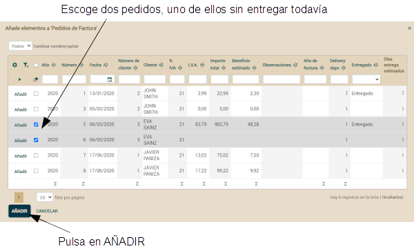
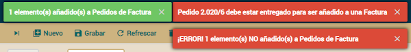

Lección 18: Validando con @EntityValidator
Curso: 1. Primeros pasos | 2. Modelo básico del dominio (1) | 3. Modelo básico del dominio (2) | 4. Refinar la interfaz de usuario | 5. Desarrollo ágil | 6. Herencia de superclases mapedas | 7. Herencia de entidades | 8. Herencia de vistas | 9. Propiedades Java | 10. Propiedades calculadas | 11. @DefaultValueCalculator en colecciones | 12. @Calculation y totales de colección | 13. @DefaultValueCalculator desde archivo | 14. Evolución del esquema manual | 15. Cálculo de valor por defecto multiusuario | 16. Sincronizar propiedades persistentes y calculadas | 17. Lógica desde la base de datos | 18. Validando con @EntityValidator | 19. Alternativas de validación | 20. Validación al borrar | 21. Anotación Bean Validation propia | 22. Llamada REST desde una validación | 23. Atributos en anotaciones | 24. Refinar el comportamiento predefinido | 25. Comportamiento y lógica de negocio | 26. Referencias y colecciones | A. Arquitectura y filosofía | B. Java Persistence API | C. Anotaciones | D. Pruebas automáticas
Tabla de contenidos
Nuestra validación
Vamos a refinar tu código para que el usuario no pueda asignar pedidos a una factura si los pedidos no han sido entregados todavía. Es decir, solo los pedidos entregados pueden asociarse a una factura. Aprovecharemos la oportunidad para explorar diferentes formas de hacer esta validación.Añadir la propiedad entregado a Pedido
Para hacer esto, lo primero es añadir una nueva propiedad a la entidad Pedido. La propiedad entregado:@Column(columnDefinition="BOOLEAN DEFAULT FALSE")
boolean entregado;
@View(extendsView="super.DEFAULT",
members=
"diasEntregaEstimados, entregado, " + // Añade entregado
"factura { factura }"
)
...
public class Pedido extends DocumentoComercial {
Validar con @EntityValidator
En tu aplicación actual el usuario puede añadir cualquier pedido que le plazca a una factura usando el módulo Factura y puede asignar una factura a cualquier pedido desde el módulo Pedido. Vamos a restringir esto. Solo los pedidos entregados podrán añadirse a una factura.La primera alternativa que usaremos para implementar esta validación es mediante @EntityValidator. Esta anotación te permite asignar a tu entidad una clase con la lógica de validación deseada. Anotemos tu entidad Pedido tal como muestra el siguiente código:
@EntityValidator(
value=com.tuempresa.facturacion.validadores.ValidadorEntregadoParaEstarEnFactura.class, // Clase con la lógica de validación
properties= {
@PropertyValue(name="anyo"), // El contenido de estas propiedades
@PropertyValue(name="numero"), // se mueve desde la entidad 'Pedido'
@PropertyValue(name="factura"), // al validador antes de
@PropertyValue(name="entregado") // ejecutar la validación
})
public class Pedido extends DocumentoComercial {
package com.tuempresa.facturacion.validadores; // En el paquete 'validadores'
import com.tuempresa.facturacion.modelo.*;
import org.openxava.util.*;
import org.openxava.validators.*;
import lombok.*;
@Getter @Setter
public class ValidadorEntregadoParaEstarEnFactura
implements IValidator { // ha de implementar 'IValidator'
private int anyo; // Propiedades a ser inyectadas desde Pedido
private int numero;
private boolean entregado;
private Factura factura;
public void validate(Messages errors)
throws Exception { // La lógica de validación
if (factura == null) return;
if (!entregado) {
errors.add( // Al añadir mensajes a 'errors' la validación fallará
"pedido_debe_estar_entregado", // Un id del archivo i18n
anyo, numero); // Argumentos para el mensaje
}
}
}
# Mensajes para la aplicación Facturacion
pedido_debe_estar_entregado=Pedido {0}/{1} debe estar entregado para ser añadido a una Factura

Se mostrará un diálogo con una lista de pedidos para escoger. Selecciona dos, uno de ellos no entregado todavía y pulsa en AÑADIR:

Entonces el pedido entregado se añadirá mientras que el otro es rechazado, generando los siguientes mensajes:
